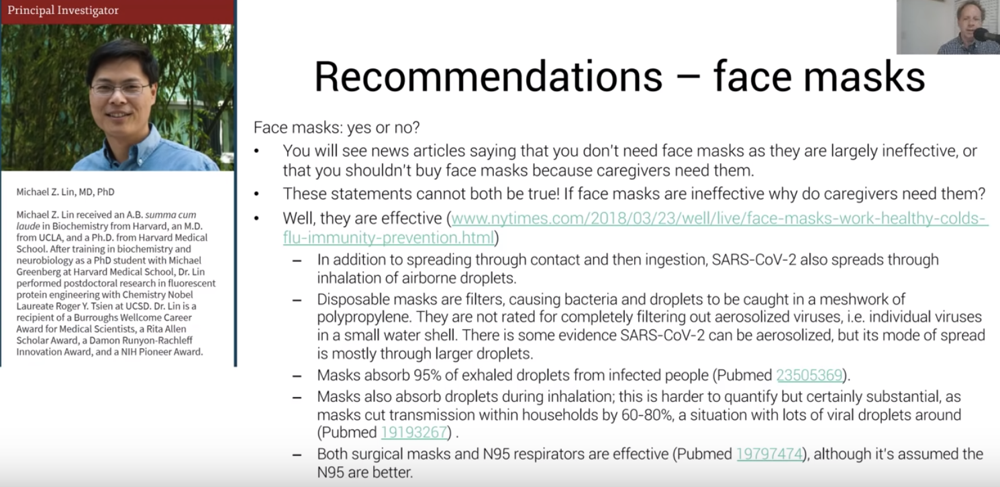
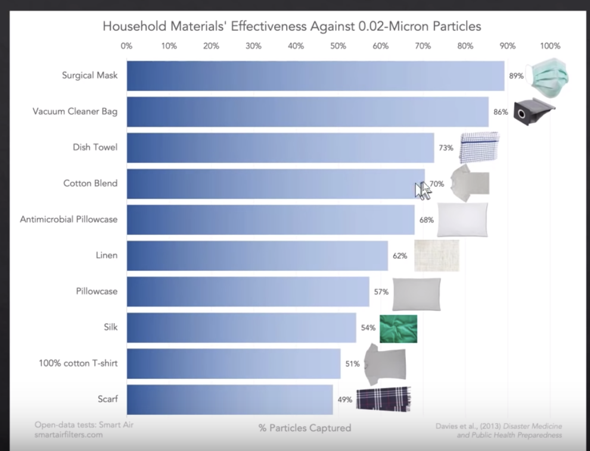
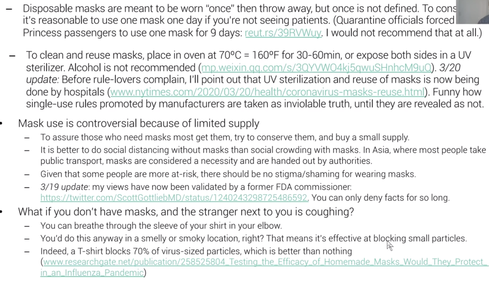

Joining #Masks4All against Coronavirus
I am a avid viewer of Lex Fridman’s podcasts and other misc. content, particularly his Youtube videos. I recently watched one of his videos on “Face Masks for All” & DIY Masks, seen here.
In it, he discusses what you need to know about face masks and its impact on it and the spread of COVID19 (2019 Coronavirus)
The DIY mask portion is on minute 5:18 of the video.
From this video, I too wanted to take action to inform individuals the impact on face masks and how to protect yourself from both the viral pandemic and misinformation pandemic.
Misinformation being spread by the @WHO about masks 😷
— Sam Feldman (@sam_feldman_) March 23, 2020
“There is no evidence they protect people who are not sick.”
Yet seconds later, they advise wearing a mask if you’re near someone with coronavirus. So they clearly do protect people who aren’t sick.https://t.co/qE3qmaBdtt
Moreover, I wanted to provide another alternative to save masks for healthcare workers that would need disposable (N95 or surgical) masks, when they come in supply again.
How to control the spread of the COVID19 (Coronavirus) Pandemic
Overall, from what Lex echoed from the reseach is that we need to:
- Test
- Trace
- Quarantine infected
- #Masks4All
How does the virus spread?
At a high level, there are 3 ways this virus can spread:
- Contact
- Droplet
- Airborne
Bulletins 1 & 2 are focused cases to be aware of, but bulletin 3 too can be of a matter, unless you are within some distance amount of covid19-positive individuals (now you get why the 6ft mandate matters)
Now that individuals are social distancing, how else can we stop the spread of COVID19 through “Droplets” not being able to reach onto your face, mouth, etc?
Masks.
How do we know #Masks4All work?
In one of Jeremy Howard’s summary of research articles, we observe the coronavirus cases cumulative # of cases over time:

Notice the significant difference between the cumulative curves with “shapes” of growth in cases of the virus climbing to higher numbers and the “shaps” of growth in cases not climbing so much.
What are some of the factors that make this difference?
There can be cultural differences of hygenie, logistic deployment of resources, government action (i.e. reaction), or…cultural differences in how to react being sick?
In Japan, Hong Kong, and Singapore, we notice that maybe…maybe masks work? Who’s to know? Well, luckily there is academic research proving the degree of effect on masks to protect society, and yourself.
In the articles and videos, we hear about the Czech Republic or Tawain are examples of having low growth in counts of the COVID19. More can be found there an other resources, at the end of this article.
 Source
But I leave you with a question–What will you do?
My DIY Mask Attempt
My attempt at #Masks4All pic.twitter.com/rl9mb6X3Pd
— Raul ∈ 🌤️📊 Ø (@RaulingAverage) March 29, 2020
Using the leftovers
Using the leftover material to make 2 more DIY masks. pic.twitter.com/IygW3UUEdq
— Raul ∈ 🌤️📊 Ø (@RaulingAverage) March 29, 2020
How to wear it?
Finished product pic.twitter.com/HYQpnK7QxR
— Raul ∈ 🌤️📊 Ø (@RaulingAverage) March 29, 2020
How not to wear it?
How not to wear it pic.twitter.com/i3VI6kABhK
— Raul ∈ 🌤️📊 Ø (@RaulingAverage) March 29, 2020
Other DIY mask tutorials
- https://www.youtube.com/watch?v=BCJcE-r7kcg
- https://www.youtube.com/watch?v=S9RWII2-5_4
- https://www.youtube.com/watch?v=vTJevg9i7XA
Notes
- Watch out for 100% cotton shirts, as they have a effectiveness of 50%, compared to cotton blend (effect 70%), seen below and in this video

-
When cleaning the mask, either put it in extreme heat for or clean it
-
Do not re-use the mask, as the particles can stay on there
-
Some other things to consider:
 Source
Also, Stay Home, please. <3
Research & Resources
The following is an appendix of existing resources I used for this article, plus the ones provided by researchers Lex Fridmen, Jeremy Howard & Rachel Thomas, and Petr Ludwig
Petr Ludwig Original Research
Czech #masks4all
- Google Doc: http://tiny.cc/masks4all
Jeremy Howard & Rachel Thomas’ research paper collection
Lex’s resources
- Slides for this video: https://bit.ly/3duqq82
- Slide References: https://bit.ly/covid-19-masks